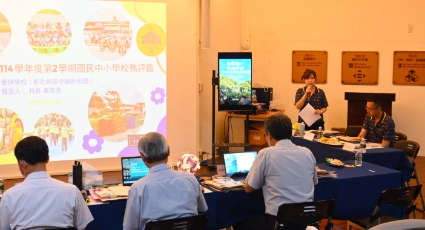

May 8, 2026 was a very important day for Hsinmin Elementary, as we welcomed the Changhua County school evaluation for the second semester of the 2025 school year. To the outside world this was a school evaluation; but to Hsinmin it was more — a showcase of our educational philosophy, a test of teamwork, the accumulation of a school's culture, and a presentation of our children's learning.
Founded more than twenty years ago, Hsinmin has always upheld the values of diversity, sustainability, quality and excellence. We strive to build a school with musical depth, a campus with a forest ecology, an environment rich in reading and aesthetics, a bilingual and international outlook, the capacity for a technological future, and an education with warmth and character. We believe education is not only about teaching children to study, but about accompanying them to become better versions of themselves.
In this evaluation we presented the full picture: administrative management and school development; teachers' professional growth and open lessons; bilingual education and the VR International English Village; the promotion of AI and technology education; music education and international exchange; reading, aesthetic and character education; diverse clubs and adaptive development; a friendly campus and student counselling; and learning support and home–school cooperation.
From collaborative lesson planning and open classes to bilingual challenge games and a county-first English read-aloud; from the string ensemble and lawn concerts to performances at the National Concert Hall and a flash mob at Taipei Main Station; from reading and an aesthetic campus to our children's character and service learning — none of these achievements was completed in a single day. They are the fruit of teachers' long, quiet cultivation, accumulated little by little.

Our sincere thanks to the visiting committee for their professional, meticulous and warm guidance: Professor Ting Yi-ku of University of Taipei, Professor Chou Li-hsun of National Chiayi University, Professor Lin Chi-chao of Tunghai University, and Principal Lai Yi-chin of Nanya Elementary. We also thank the Changhua County Education Department team for their thoughtful planning and arrangement.
Our deepest thanks go to everyone who worked so hard — Principal Huang Huai-hsuan, who leads Hsinmin steadily forward; Supervisor Tai Feng-tian, who returned to assist; Director Chan Yi-liang, who handled the overall planning and compilation; Directors Lin Kuan-yu, Chen Tsai-yun and Hsiao Chia-hua and all administrative colleagues; and all the section heads and homeroom teachers who together completed an enormous task. Thanks too to Chairman Chen Chih-chiang and Vice-Chairman Huang Che-wei, who represented the parents, and to the three student representatives who confidently showed the learning and character of Hsinmin's children.
An evaluation is not an end but the next stage of a journey. A school's strength is never the work of one person, but of a group willing to strive together for the children. Thank you to everyone who took part, and to everyone willing to believe in education. The Hsinmin of the future will keep working hard, leading our children toward an ever-wider world.
🌟115.5.8 新民國小校務評鑑日🌟
❤️一場屬於全校的榮耀與感動❤️
115年5月8日，是新民國小今年十分重要的一天。
這一天，我們迎來彰化縣114學年度第2學期國民中小學校務評鑑。
對外，這是一場校務評鑑。
但對新民而言，這更是一場
✨教育理念的展現
✨團隊合作的考驗
✨學校文化的累積
✨孩子學習成果的呈現
🏫【優質新民・持續前進】🏫
🌱「多元」
🌱「永續」
🌱「優質」
🌱「卓越」
的辦學理念。
我們努力打造一所——
🎻有音樂底蘊的學校
🌳有森林生態的校園
📚有閱讀美感的環境
🌏有雙語國際的視野
💡有科技未來的能力
❤️有溫度與品德的教育
「教育，不只是教孩子讀書，
而是陪孩子成為更好的自己。」
📖【評鑑，看見新民的努力】📖
✨行政管理與校務發展
✨教師專業成長與公開授課
✨雙語教育與VR國際英語村
✨AI與科技教育推動
✨音樂教育與國際交流
✨閱讀、美感與品德教育
✨多元社團與適性發展
✨友善校園與學生輔導
✨學習扶助與親師合作
從課程共備、公開授課
到雙語闖關、英語朗讀全縣第一👍
從弦樂團、草地音樂會
到國家音樂廳與台北車站快閃👍
從閱讀教育、美感校園
到孩子的品德與服務學習👍
每一項成果背後，都不是一天完成的。
而是老師們長時間默默耕耘，一點一滴累積而來。
👨🏫【感謝蒞校訪視委員】 👨🏫
👨🏫 丁一顧教授
臺北市立大學教育行政與評鑑研究所特聘教授
👨🏫 周立勳教授
國立嘉義大學教育學系教授
👨🏫 林啟超教授
東海大學教育研究所教授
👨🏫 賴益進校長
彰化縣湳雅國小校長
謝謝委員們專業、細緻且溫暖的指導，
給予新民許多寶貴建議與肯定。
🙌【感謝縣府團隊用心規劃】 🙌
特別感謝彰化縣政府教育處 #學管科劉曉君、 #蔡秉諺
用心規劃與安排此次校務評鑑工作，讓整體流程更加完善順利，也給予學校許多協助與支持。
🙌【最深的感謝，獻給最努力的大家】🙌
感謝 ❤️
黃懷萱校長 帶領新民穩健前行，凝聚團隊力量。
戴豐田課督 專程返校陪伴與協助
詹益樑主任 整體規劃與資料統整上傳
林冠妤主任 #陳采筠主任 #蕭嘉樺主任 #全體行政同仁 長時間投入資料整理與統整。
感謝所有組長、全體導師
一起完成龐大的行政與教學任務。
感謝 ❤️
陳志强會長 #黃哲偉副會長
代表家長接受訪談，長期支持學校發展，成為學校最強大的後盾。
感謝3位 #學生代表，自信、大方地展現新民孩子的學習成果與素養。
感謝 ❤️
簡玉華老師 #林女滿老師 協助學習扶助系統操作、教師訪談與相關支援工作，讓評鑑流程更加順利完善。
🌟【評鑑不是終點，而是下一段旅程】🌟
一所學校的力量，從來不是一個人完成的。而是一群人，願意一起為孩子努力。謝謝所有參與其中的人。謝謝每一位願意相信教育的人。
未來的新民，依然會繼續努力
帶著孩子走向更寬廣的世界👍